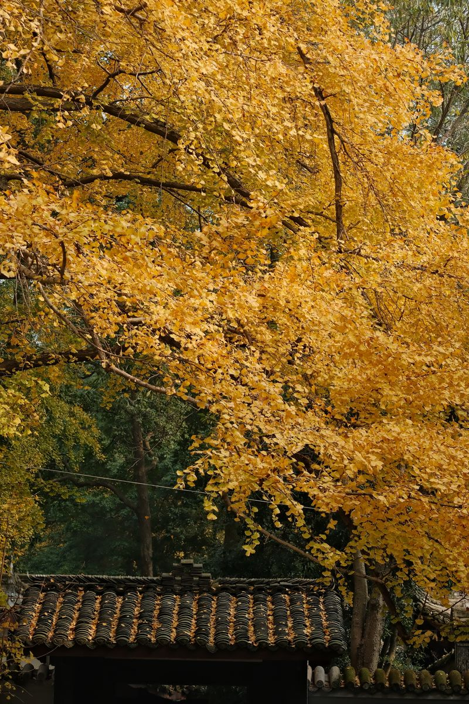

最受欢迎
最受欢迎
导航

Recommended Routes
四条经过实地踩线的主题线路，覆盖采茶、研学、康养与红叶四种不同的旅行节奏。
Trending Now
短时高频的轻量种草，点开卡片可直接查看体验详情与预约方式。
 热门
热门
身着汉服漫步千亩茶园，专业摄影师跟拍，定格诗意瞬间。

古银杏与茶垄交错成景，秋日金叶落满茶行，是全镇最出片的一角。

万亩竹海深处设席，以佛手瓜与高山茶入馔，配一盏禅茶点心。
百年古刹晨钟暮鼓，寺内提供禅茶品鉴，环境清幽宜静心。
Town Overview
黄磜镇位于新丰县东北部，距县城约 23 公里，是广东省"一村一品、一镇一业"专业镇。